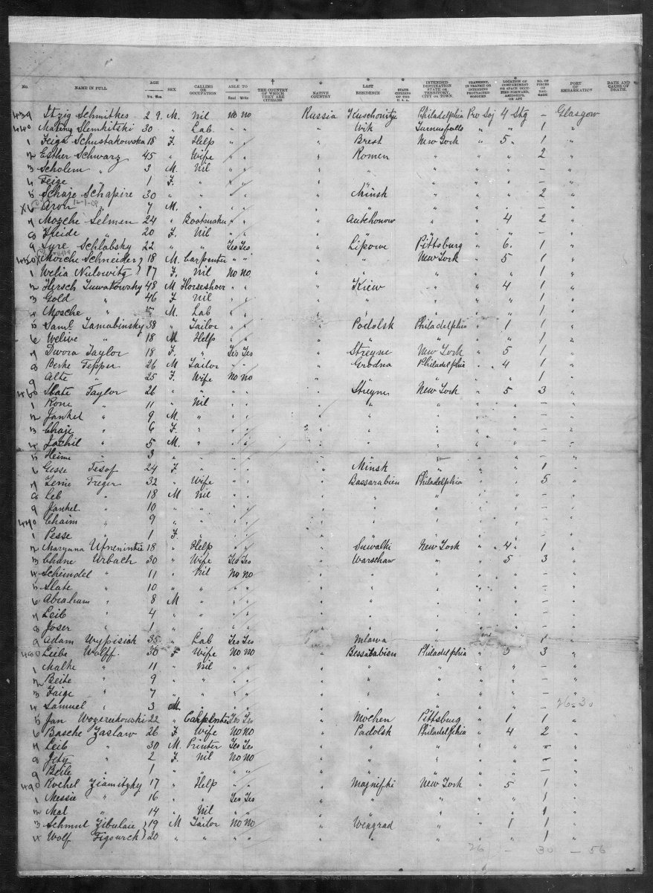

The Circassia passenger list, Ellis Island, 3 July 1893, with Basche, Jety and Beile Zaslaw.


What it is
Bessie, Beckie and Catherine. Ellis Island passenger manifest, SS Circassia from Glasgow, arrived New York 3 Jul 1893 (image 262 of 647): Basche, Leib, Jety and Beile Zaslaw, bound for Philadelphia. Statue of Liberty–Ellis Island Foundation records J61Q-W2J (Basche) and J61Q-W22 (Beile).
Original: statueofliberty.org/arrival-details/?id=J61Q-W2J and statueofliberty.org/arrival-details/?id=J61Q-W22
People in this record
Bessie Weiss (Saslow) 1867–1936 · Leib Zaslaw b. c. 1863
How to cite
Bessie, Beckie and Catherine. Ellis Island passenger manifest, SS Circassia from Glasgow, arrived New York 3 Jul 1893 (image 262 of 647): Basche, Leib, Jety and Beile Zaslaw, bound for Philadelphia. Statue of Liberty–Ellis Island Foundation records J61Q-W2J (Basche) and J61Q-W22 (Beile). The Rodilitz and Zaslow Families, compiled by the Koik family.